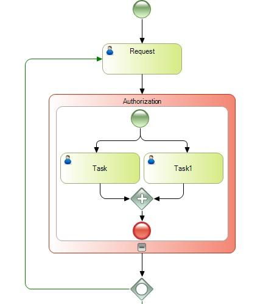
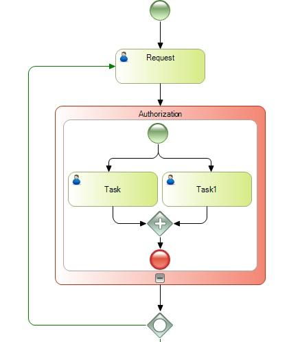

BPD Subprocesses
The objective of the sub-processes is to be able to encapsulate a process like a task of another process. This implies two advantages: improving the visibility of the process definitions and reusing the processes.
There are two types of subprocesses:
Examples

 

Note: To edit an embedded subprocess you can do it inside its parent or double clicking it.